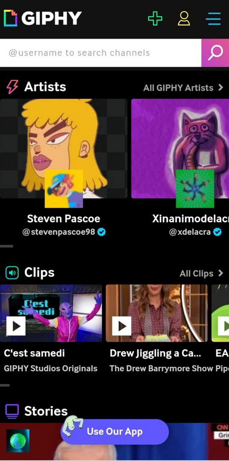
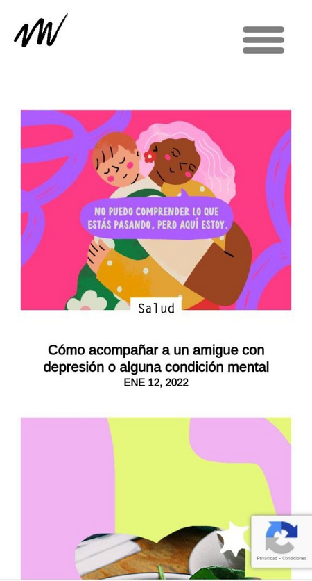
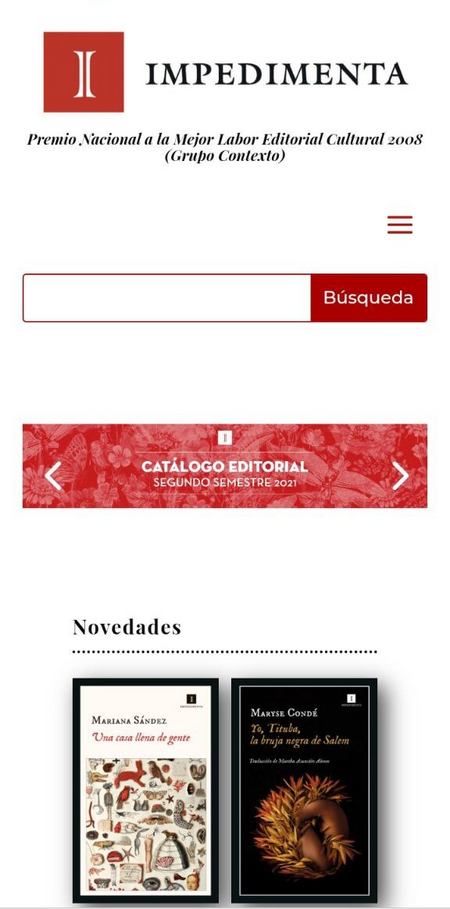

Proximity
Giphy
https://giphy.com/ Related elements are grouped together so they can be viewed as a whole. I can easily differentiate the groups due to the proximity between its components since there are no independent elements that make the page lose cohesion.
Repetition
Malvestida
https://malvestida.com/ I like the way in which the same design or shape is repeated throughout the page, with some variation but without losing unity or the concept of continuity. In this case, shapes and colors are repeated, giving a beauty perception of the page.
Alignment
Impedimenta
https://impedimenta.es/ You can see a neat web page, quite simple but with good visual connection, very easy to see. I also like the fact that the page is not very busy, having enough white space to rest the eye.